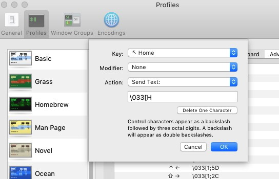

macOS Key bindings
Key binding allow you to swap around the action of keys (or key combinations) on the mac keyboard.
The default key bindings for the home and end keys in MacOS are different to any other operating system
To remaps the key bindings of a single user, edit the default keybinding file:
~/Library/KeyBindings/DefaultKeyBinding.dict
If they are not already in place - just create the file & directory.
The sample file below includes some help text and the codes to set Home and End to Start/End of line:
/*
Key Modifiers
^ : Ctrl
$ : Shift
~ : Option (Alt)
@ : Command (Apple)
# : Numeric Keypad
Non-Printable Key Codes
Up Arrow: \UF700 Backspace: \U0008 F1: \UF704
Down Arrow: \UF701 Tab: \U0009 F2: \UF705
Left Arrow: \UF702 Escape: \U001B F3: \UF706
Right Arrow: \UF703 Enter: \U000A ...
Insert: \UF727 Page Up: \UF72C
Delete: \UF728 Page Down: \UF72D
Home: \UF729 Print Screen: \UF72E
End: \UF72B Scroll Lock: \UF72F
Break: \UF732 Pause: \UF730
SysReq: \UF731 Menu: \UF735
Help: \UF746
*/
{
/* Remap Home / End to move to the start/end of the line */
"\UF729" = "moveToBeginningOfLine:"; /* Home */
"\UF72B" = "moveToEndOfLine:"; /* End */
"$\UF729" = "moveToBeginningOfLineAndModifySelection:"; /* Shift + Home */
"$\UF72B" = "moveToEndOfLineAndModifySelection:"; /* Shift + End */
/* Remap alternate keys for Start/End of document */
"^," = moveToBeginningOfDocument:;
"^." = moveToEndOfDocument:;
}
Home/End mapping via Jon Evans, Start/End mapping via osxnotes.net who have lots of other remapping suggestions.
Key mapping in system preferences:
The key remapping available in system preferences allows swapping the 4 keys: Caps Lock, Control, Option and Command  . This is to support non-Apple keyboards which may have the keys in a slightly different place.
. This is to support non-Apple keyboards which may have the keys in a slightly different place.
Apple > System Preferences > Keyboard > Keyboard > Modifier Keys
Terminal.app
Terminal.app does not respect the macOS Key Bindings, but you can set terminal-specific keybindings in the Terminal.app preferences:
Profile > Keyboard > then click + to add a keybinding
The shortcuts you’ll need to add for Home and End (via evilissimo):
ESC[H - For the Home key
ESC[F - For the End key
When you type these in (press the actual Esc key) they should appear as the following escape codes:

“There are shortcuts to happiness, and dancing is one of them” ~ Vicki Baum
Related macOS comands:
Keyboard Shortcuts - bash Terminal
Keyboard Shortcuts - macOS
Guide to customizing OS X key bindings with a .plist or .dict property list. - Jacob Rus
Text System Defaults and Key Bindings - Apple.com
Spectacle app - Shortcut keys for Maximise/Minimise.